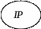
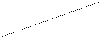
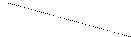
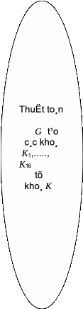
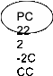
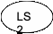
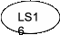

Kho¸
K
B¶n
râ x



L0
R0

K1
L1
R1
K2
L15
R15
K 16
R16
L16

B¶n
m· y
S¬ ®å kh¸i qu¸t cña thuËt to¸n lËp mËt m· DES
§Ó hoµn chØnh s¬ ®å thuËt to¸n lËp mËt m·, ta cßn ph¶i tr×nh bµy c¸c thuËt to¸n IP ( vµ do ®ã, c¶ IP -1 ), thuËt to¸n f , vµ thuËt to¸n G t¹o ra c¸c kho¸ K1,...,K16 .
IP lµ mét phÐp ho¸n vÞ vÞ trÝ cña c¸c ký tù trong mçi tõ 64 bit, tõ vÞ trÝ thø 1 ®Õn vÞ trÝ thø 64. B¶ng díi ®©y cho ta phÐp ho¸n vÞ IP, víi c¸ch hiÓu lµ bit thø nhÊt cña IP (x ) lµ bit thø 58 cña tõ x (cã 64 bit), bit thø hai cña IP (x) lµ bit thø 50 cña x, v.v... B¶ng cña phÐp ho¸n vÞ IP -1 còng ®îc hiÓu t¬ng tù.
IP |
58 50 42 34 26 18 10 2 60 52 44 36 28 20 12 4 62 54 46 38 30 22 14 6 64 56 48 40 32 24 16 8 57 49 41 33 25 17 9 1 59 51 43 35 27 19 11 3 61 53 45 37 29 21 13 5 63 55 47 39 31 23 15 7 |
IP -1 |
40 8 48 16 56 24 64 32 39 7 47 15 55 23 63 31 38 6 46 14 54 22 62 30 37 5 45 13 53 21 61 29 36 4 44 12 52 20 60 28 35 3 43 11 51 19 59 27 34 2 42 10 50 18 58 26 33 1 41 9 49 17 57 25 |
S¬ ®å hµm f : Hµm f lÊy ®Çu vµo lµ hai tõ : R cã 32 bit vµ K cã 48 bit, vµ cã kÕt qu¶ ë ®Çu ra lµ tõ f (R,K ) cã 32 bit, ®îc x¸c ®Þnh bëi s¬ ®å sau ®©y:
R
(32
bit)
K
(48
bit)
E
(R)
48 bit
B1
B2
B3
B4
B5
B6
B7
B8
B8
Mçi Bi lµ mét tõ 6 bit
S1
S2
S3
S4
S5
S6
S8
S8
C1
C2
C3
C4
C5
C6
C7
C8
Mçi Ci lµ mét tõ 4 bit
f
(R,K
) 32
bit
Trong s¬ ®å ë trªn cña hµm f , E lµ mét phÐp ho¸n vÞ “më réng” theo nghÜa lµ nã biÕn mçi tõ R 32 bit thµnh tõ E (R ) b»ng c¸ch ho¸n vÞ 32 bit cña R nhng cã mét sè cÆp bit ®îc lÆp l¹i ®Ó E (R ) thµnh mét tõ cã 48 bit, cô thÓ phÐp ho¸n vÞ “më réng” ®ã ®îc cho bëi b¶ng sau ®©y :
PhÐp ho¸n vÞ “më réng” E |
32 1 2 3 4 5 4 5 6 7 8 9 8 9 10 11 12 13 12 13 14 15 16 17 16 17 18 19 20 21 20 21 22 23 24 25 24 25 26 27 28 29 28 29 30 31 32 1 |
Theo ®Þnh nghÜa ®ã, mçi tõ R = a1a2a3......a32 sÌ biÕn thµnh tõ
E (R ) = a32 a1a2a3a4a 5a4a 5a6a7a8a9a8a9 .......a32a1 .
Sau khi thùc hiÖn E, E (R ) sÏ ®îc céng (tõng bit theo mod2) víi K , ®îc mét tõ 48 bit, chia thµnh 8 ®o¹n B1, ..., B8 . Mçi hép S i (i = 1,...,8) lµ mét phÐp thay thÕ, biÕn mçi tõ Bj 6 bit thµnh mét tõ Cj 4 bit; c¸c hép Si ®îc cho bëi c¸c b¶ng díi ®©y víi c¸ch hiÓu nh sau: mçi tõ Bj = b1b2b3b4b5b6 øng víi mét vÞ trÝ (r,s) ë hµng thø r vµ cét thø s trong b¶ng, c¸c hµng ®îc ®¸nh sè tõ thø 0 ®Õn thø 3 øng víi biÓu diÔn nhÞ ph©n b1b6 vµ c¸c cét ®îc ®¸nh sè tõ thø 0 ®Õn thø 15 øng víi biÓu diÔn nhÞ ph©n b2b3b4b5 . Gi¸ trÞ cña Si (Bj )= Cj = c1c2c3c4 lµ mét tõ 4 bit, biÓu diÔn nhÞ ph©n cña sè t¹i hµng r cét s trong b¶ng. ThÝ dô ta cã S1(101110) = 0101, S2(011000) = 1110, v.v...
S1 |
14 4 13 1 2 15 11 8 3 10 6 12 5 9 0 7 0 15 7 4 14 2 13 1 10 6 12 11 9 5 3 8 4 1 14 8 13 6 2 11 15 12 9 7 3 10 5 0 15 12 8 2 4 9 1 7 5 11 3 14 10 0 6 13 |
S2 |
15 1 8 14 6 11 3 4 9 7 2 13 12 0 5 10 3 13 4 7 15 2 8 14 12 0 1 10 6 9 11 5 0 14 7 11 10 4 13 1 5 8 12 6 9 3 2 15 13 8 10 1 3 15 4 2 11 6 7 12 0 5 14 9 |
S3 |
10 0 9 14 6 3 15 5 1 13 12 7 11 4 2 8 13 7 0 9 3 4 6 10 2 8 5 14 12 11 15 1 13 6 4 9 8 15 3 0 11 1 2 12 5 10 14 7 1 10 13 0 6 9 8 7 4 15 14 3 11 5 2 12 |
S4 |
7 13 14 3 0 6 9 10 1 2 8 5 11 12 4 15 13 8 11 5 6 15 0 3 4 7 2 12 1 10 14 9 10 6 9 0 12 11 7 13 15 1 3 14 5 2 8 4 3 15 0 6 10 1 13 8 9 4 5 11 12 7 2 14 |
S5 |
2 12 4 1 7 10 11 6 8 5 3 15 13 0 14 9 14 11 2 12 4 7 13 1 5 0 15 10 3 9 8 6 4 2 1 11 10 13 7 8 15 9 12 5 6 3 0 14 11 8 12 7 1 14 2 13 6 15 0 9 10 4 5 3 |
S6 |
12 1 10 15 9 2 6 8 0 13 3 4 14 7 5 11 10 15 4 2 7 12 9 5 6 1 13 14 0 11 3 8 9 14 15 5 2 8 12 3 7 0 4 10 1 13 11 6 4 3 2 12 9 5 15 10 11 14 1 7 6 0 8 13 |
S7 |
4 11 2 14 15 0 8 13 3 12 9 7 5 10 6 1 13 0 11 7 4 9 1 10 14 3 5 12 2 15 8 6 1 4 11 13 12 3 7 14 10 15 6 8 0 5 9 2 6 11 13 8 1 4 10 7 9 5 0 15 14 2 3 12 |
S8 |
13 2 8 4 6 15 11 1 10 9 3 14 5 0 12 7 1 15 13 8 10 3 7 4 12 5 6 11 0 14 9 2 7 11 4 1 9 12 14 2 0 6 10 13 15 3 5 8 2 1 14 7 4 10 8 13 15 12 9 0 3 5 6 11 |
PhÐp ho¸n vÞ P trong s¬ ®å cña hµm f ®îc cho bëi b¶ng ë trang sau ®©y. Nh vËy, hµm f ®· ®îc x¸c ®Þnh hoµn toµn. Chó ý r»ng c¸c hép S1,..., S8 lµ phÇn quan träng nhÊt trong viÖc b¶o ®¶m tÝnh bÝ mËt cña hÖ m· DES.
P |
16 7 20 21 29 12 28 17 1 15 23 26 5 18 31 10 2 8 24 14 32 27 3 9 19 13 30 6 22 11 4 25 |
S¬ ®å thuËt to¸n G t¹o c¸c tõ kho¸ K1,...,K16 :
Kho¸
K
S¬
®å thuËt to¸n G
C0
D0
C1
D1

K1

C2
D2
K2
............................................ ............... ..............

C16
D16
K16
ThuËt to¸n G t¹o ra c¸c tõ kho¸ K1,...,K16 tõ kho¸ mËt m· K ®îc thùc hiÖn theo s¬ ®å thuËt to¸n m« t¶ ë trªn. Kho¸ mËt m· K lµ mét tõ 56 bit, ta chia thµnh 8 ®o¹n, mçi ®o¹n 7 bit, ta thªm cho mçi ®o¹n 7 bit ®ã mét bit thö tÝnh ch½n lÎ vµo vÞ trÝ cuèi ®Ó ®îc mét tõ 64 bit, ta vÉn ký hiÖu lµ K , tõ míi K nµy lµ tõ xuÊt ph¸t cho qu¸ tr×nh tÝnh to¸n cña thuËt to¸n G (nh sÏ thÊy vÒ sau, c¸c bit thö tÝnh ch½n lÎ mµ ta thªm vµo chØ ®îc dïng ®Ó ph¸t hiÖn sai trong tõng ®o¹n bit cña kho¸ chø thùc tÕ kh«ng tham gia vµo chÝnh qu¸ tr×nh tÝnh to¸n cña G ).
Tríc tiªn, thuËt to¸n PC-1 biÕn K thµnh mét tõ 56 bit mµ ta chia thµnh hai nöa C0D0 , mçi nöa cã 28 bit. PhÐp ho¸n vÞ PC-1 ®îc x¸c ®Þnh bëi b¶ng sau ®©y (chó ý lµ trong b¶ng kh«ng cã c¸c sè 8,16,24,32,40,48,56,64 lµ vÞ trÝ cña nh÷ng bit ®îc thªm vµo khi h×nh thµnh tõ míi K ). Nhí r»ng theo qui íc cña phÐp ho¸n vÞ, bit thø nhÊt cña PC-1(x ) lµ bit thø 57 cña x , bit thø hai cña
PC-1(x ) lµ bit thø 49 cña x , v.v...
PC-1 |
57 49 41 33 25 17 9 1 58 50 42 34 26 18 10 2 59 51 43 35 27 19 11 3 60 52 44 36 63 55 47 39 31 23 15 7 62 54 46 38 30 22 14 6 61 53 45 37 29 21 13 5 28 20 12 4 |
Víi mçi i = 1,2,...16, LSi lµ phÐp chuyÓn dÞch vßng sang tr¸i, chuyÓn dÞch mét vÞ trÝ nÕu i = 1,2,9,16, vµ chuyÓn dÞch hai vÞ trÝ víi nh÷ng gi¸ trÞ i cßn l¹i.
Cuèi cïng, phÐp ho¸n vÞ PC-2 biÕn mçi tõ 56 bit CiDi (i =1,2,...16) thµnh tõ 48 bit Ki theo b¶ng díi ®©y:
PC-2 |
14 17 11 24 1 5 3 28 15 6 21 10 23 19 12 4 26 8 16 7 27 20 13 2 41 52 31 37 47 55 30 40 51 45 33 48 44 49 39 56 34 53 46 42 50 36 29 32 |
Nh vËy, ta ®· m« t¶ ®Çy ®ñ qu¸ tr×nh tÝnh to¸n cña thuËt to¸n G ®Ó tõ khoa m· ban ®Çu K thu ®îc c¸c tõ kho¸ K1 ,..., K16 cung cÊp cho thuËt to¸n f, vµ tõ ®ã cho toµn bé thuËt to¸n lËp mËt m· DES. Ta chó ý r»ng mçi Ki cã 48 bit ®Òu do ho¸n vÞ 56 bit (cã bá bít 8 bit) cña K mµ thµnh, do ®ã cã thÓ cho trùc tiÕp b»ng c¸ch cho c¸c b¶ng m« t¶ c¸c phÐp ho¸n vÞ ®ã. B¹n ®äc cã thÓ t×m ®äc 16 b¶ng øng víi 16 Ki ®ã trong s¸ch cña D.R. Stinson (cã trong phÇn S¸ch tham kh¶o).
Víi viÖc tr×nh bµy s¬ ®å kh¸i qu¸t cïng víi c¸c b¶ng, c¸c s¬ ®å cña c¸c thuËt to¸n phô, ta ®· hoµn thµnh viÖc giíi thiÖu thuËt to¸n lËp mËt m· E cña hÖ mËt m· DES , cho ta y = E (K,x ) víi mèi kho¸ K vµ b¶n râ x.
ThuËt to¸n gi¶i m· D, cho ta x =D (K ,y ), ®îc thùc hiÖn b»ng cïng mét qu¸ tr×nh tÝnh to¸n nh qu¸ tr×nh lËp m·, chØ kh¸c lµ thø tù dïng c¸c Ki ®îc ®¶o ngîc l¹i theo thø tù K16,K15,...,K1.
Cã thÓ thùc hiÖn thö c¸c thuËt to¸n lËp m· vµ gi¶i m· kÓ trªn víi thÝ dô sau ®©y: Cho K vµ x lµ
K = 12695BC9B7B7F8
x = 0123456789ABCDEF,
ë ®©y c¸c sè ®îc viÕt theo c¬ sè 16 (hexadecimal), mçi ký tù thay cho 4 bit. B¶n m· y t¬ng øng sÏ lµ
y = 85E813540F0AB405.
3.4.3. C¸c c¸ch dïng DES.
N¨m 1981, NBS c«ng bè c¸c chuÈn xö lý th«ng tin liªn bang cã liªn quan ®Õn DES, trong ®ã ®· hîp thøc ho¸ bèn c¸ch dïng DES trong thùc tÕ lµ c¸c c¸ch: ECB (electronic codebook mode), CFB (cipher feedback mode), CBC ( cipher block chaining mode) vµ OFB (output feedback mode).
ECB lµ c¸ch sö dông th«ng thêng vµ ®¬n gi¶n cña DES. Víi c¸ch sö dông ®ã, ta chia b¶n râ (lµ mét d·y bit) thµnh tõng khèi 64 bit x = x1x2....xn , vµ dïng cïng mét kho¸ K ®Ó m· c¸c khèi ®ã råi ghÐp l¹i ®Ó ®îc b¶n m· y = y1y2... yn , trong ®ã yi = eK (xi ).
Víi c¸ch dïng CFB, ®Ó ®îc khèi m· yi ta dïng DES cho kh«ng ph¶i xi mµ lµ cho xiyi -1 ,tøc lµ cã yi = eK (xiyi -1) víi mäi
i 1.
Trong hai c¸ch CBC vµ OFB, ta dïng DES ®Ó t¹o ra mét dßng tõ kho¸ z1...zi....., råi sau ®ã lËp m· yi = xi zi (i 1). Dßng kho¸ z1...zi..... trong c¸ch CBC ®îc x¸c ®Þnh bëi
z0 = K* (lµ mét tõ 64 bit ®îc chän tõ kho¸ K),
zi = eK (zi -1);
cßn trong c¸ch OFB ®îc x¸c ®Þnh bëi
y0 = K*
zi = eK (yi -1)
yi = xi zi (i 1).
Trong thùc tÕ, c¸c c¸ch ECB vµ CBC ®îc nhiÒu ng©n hµng dïng lµm chuÈn mËt m· cña m×nh, cßn c¸c c¸ch CFB vµ ßB thêng ®îc dïng c¶ víi c¸c môc ®Ých x¸c nhËn.
3.4.4. VÒ tÝnh an toµn vµ viÖc th¸m m· ®èi víi DES.
1.VÒ tÝnh an toµn b¶o mËt cña DES. Sau khi DES ®îc c«ng bè nh mét chuÈn chÝnh thøc cho truyÒn tin b¶o mËt cña quèc gia, nhiÒu vÊn ®Ò vÒ tÝnh an toµn vµ kh¶ n¨ng b¶o mËt cña DES ®îc ®Æt ra vµ nhiÒu biÖn ph¸p th¸m m· còng ®îc nghiªn cøu, trong suèt h¬n hai m¬i n¨m qua vµ cho ®Õn nay.
Ta chó ý r»ng trong cÊu tróc cña thuËt to¸n DES, ë mçi vßng lÆp ®Òu cã c¸c phÐp chuyÓn dÞch vµ thay thÕ xen kÏ liªn tiÕp nhau, cã t¸c dông t¨ng thªm ®é b¶o mËt cña mËt m·. ThuËt to¸n DES nãi chung ®¸p øng c¸c yªu cÇu mµ NBS ®Ò ra tõ ®Çu cho mét chuÈn mËt m·, vµ do ®ã yÕu tè b¶o mËt chñ yÕu tËp trung vµo viÖc gi÷ bÝ mËt cña kho¸, hay nãi c¸ch kh¸c, th¸m m· chñ yÕu ph¶i lµ ph¸t hiÖn kho¸ ®îc sö dông. Trong c¸c kh©u cña s¬ ®ß DES th× c¸c yÕu tè phi tuyÕn duy nhÊt n»m ë c¸c hép S1,..., S8. Ngêi ta kh«ng biÕt ngêi thiÕt kÕ c¸c hép ®ã ®· chä chóng theo nh÷ng tiªu chuÈn nµo, vµ Côc an ninh quèc gia NSA cã cµi vµo ®ã nh÷ng “cöa sËp” nµo kh«ng; nhng sau nhiÒu cè g¾ng th¸m m· kh«ng thµnh c«ng, ngêi ta ®· c«ng bè mét sè c¸c tiªu chuÈn chon c¸c hép S1,..., S8 nh sau:
1. Mçi hµng cña mét hép Si ph¶i lµ mét ho¸n vÞ cña 0,1,...,15;
2. Kh«ng mét hép Si nµo lµ mét hµm tuyÕn tÝnh hay apphin ®èi víi c¸c ®Çu vµo cña nã;
3. Víi mçi hép Si , viÖc thay ®æi mét bit ë ®Çu vµo g©y ra sù thay ®æi Ýt nhÊt hai bit ë ®Çu ra cña nã;
4. NÕu hai tõ vµo cña mét hép Si gièng nhau ë hai bit ®Çu vµ hai bit cuèi, th× hai tõ ra ph¶i kh¸c nhau ë hai bit;
5. NÕu hai tõ vµo cña mét hép Si kh¸c nhau ë hai bit ®Çu vµ gièng nhau ë hai bit cuèi, th× hai tõ ra ph¶i kh¸c nhau;
6. Víi mçi hép Si , nÕu ta cè ®Þnh gi¸ trÞ mét bit vµo vµ xÐt gi¸ trÞ cña bit ra ë mét vÞ trÝ nµo ®ã, th× sè c¸c tõ vµo t¹o ra gi¸ trÞ 0 vµ sè c¸c tõ vµo t¹o ra gi¸ trÞ 1 ë cïngvÞ trÝ ®ã ph¶i xÊp xØ b»ng nhau.
Nãi chung, ®é b¶o mËt cña DES ®· ®îc thö th¸ch qua h¬n hai m¬i n¨m sö dông vµ ®îc chøng tá lµ tin cËy. C¸c ph¬ng ph¸p th¸m m·, tuy ®· ®îc t×m kiÕm kh¸ nhiÒu, nhng gÇn nh kh«ng tr¸nh ®îc ®é phøc t¹p cña c¸ch tÇm thêng lµ duyÖt toµn bé, mµ theo c¸ch nµy th× dï lµ th¸m m· theo kiÓu “biÕt c¶ b¶n râ” ta còng ph¶i duyÖt qua 256 kho¸ cã thÓ cã, ®iÒu ®ã ®ßi hái mét lîng tÝnh to¸n khæng lå khã mµ kh¾c phôc næi !
VÒ viÖc th¸m m· ®èi víi DES.
HÖ m· chuÈn DES cã thÓ xem lµ hÖ m· ®Çu tiªn ®îc dïng phæ biÕn mét c¸ch réng r·i kh«ng chØ trong mét quèc gia mµ c¶ trªn ph¹m vi toµn thÕ giíi, toµn bé cÊu tróc thuËt to¸n ®îc c«ng bè c«ng khai, c¶ phÐp lËp m· vµ gi¶i m·, thËm chÝ c¸c s¶n phÈm phÇn cøng còng nh phÇn mÒm cña nã ®îc th¬ng m¹i ho¸; do ®ã bÝ mËt cña th«ng tin ®îc truyÒn ®i chØ cßn n»m ë ch×a kho¸ ®îc chon, ®ã lµ mét tõ 56 bit. ViÖc th¸m m· ®èi víi DES d· hÊp dÉn nhiÒu nhµ to¸n häc vµ chuyªn gia mËt m· nghiªn cøu, ®Ò xuÊt nhiÒu ph¬ng ph¸p kh¸c nhau. Ngoµi ph¬ng ph¸p “duyÖt toµn bé” nh nãi trªn, ngêi ta ®· ®Ò xuÊt mét sè ph¬ng ph¸p kh¸c, nh:
- ph¬ng ph¸p ph©n tÝch ®é chªnh lÖch (differential analysis) do Biham vµ Shamir ®Ò xuÊt n¨m 1990,
- ph¬ng ph¸p ph©n tÝch liªn quan ®Õn kho¸, do Biham ®Ò xuÊt vµo khaáng 1992-1994,
- ph¬ng ph¸p ph©n tÝch tuyÕn tÝnh, do Matsui ®a ra n¨m 1993-1994,
- ph¬ng ph¸p ph©n tÝch chªnh lÖch-tuyÕn tÝnh, do Langfort vµ Hellman ®a ra n¨m 1994,
- v.v...
C¸c ph¬ng ph¸p nµy ®Òu chøa ®ùng nhiÒu ý tëng s©u s¾c vµ tinh tÕ, nhng vÉn ®ßi hái nh÷ng khèi lîng tÝnh to¸n rÊt lín, nªn trong thùc tÕ vÉn chØ dõng l¹i ë nh÷ng minh ho¹ t¬ng ®èi ®¬n gi¶n chø cha ®îc sö dông thùc sù.